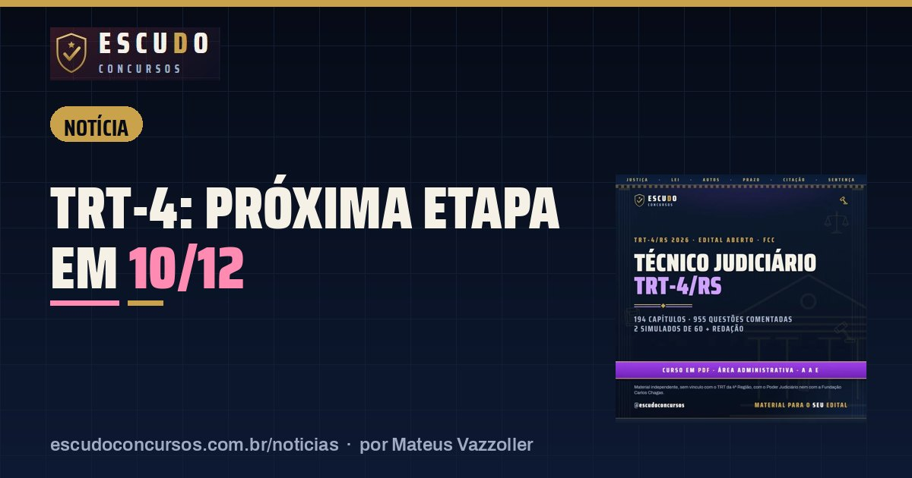

TRT-4 Técnico Judiciário: inscrições encerradas; vagas reservadas saem em 10/12 e a prova é em 31/01/2027
NotíciaPublicado em 23 de novembro de 2026, atualizado em 27 de novembro de 2026 · por Mateus Vazzoller, ESCUDO Concursos

Atualização em 27/11/2026: as inscrições terminaram em 25/11 e o prazo do boleto, em 26/11. Este texto passou a tratar das próximas etapas até a prova.
| Órgão | Tribunal Regional do Trabalho da 4ª Região (Rio Grande do Sul) |
|---|---|
| Banca | Fundação Carlos Chagas (FCC) |
| Cargo | Técnico Judiciário, Área Administrativa, cadastro de reserva |
| Remuneração inicial | R$ 9.776,71 |
| Vagas reservadas e solicitações especiais deferidas | 10/12/2026 |
| Convocação e Cartão Informativo | 11/01/2027 |
| Provas objetivas e redação | 31/01/2027, de manhã, em Porto Alegre |
As inscrições para Técnico Judiciário do TRT-4 terminaram em 25/11/2026 e o último dia para pagar o boleto foi 26/11/2026. A próxima publicação da Fundação Carlos Chagas está prevista para 10/12/2026: a relação de quem concorre às vagas reservadas e das solicitações especiais deferidas. O Edital de Convocação e o Cartão Informativo saem em 11/01/2027, e as provas objetivas e a redação são aplicadas em 31/01/2027, de manhã, em Porto Alegre. Na página do concurso na FCC, conferida na manhã de 27/11/2026, não há aviso de mudança no cronograma.
Curso ESCUDO Técnico Judiciário do TRT-4, Área Administrativa em PDF: 194 capítulos e 955 questões comentadas, 2 simulados de 60 questões com redação, de acordo com o edital. De R$ 47 por R$ 37 com o cupom TRT437 até 31/12/2026.
Ver o curso
O que sai em 10/12?
A FCC divulga no site a lista de candidatos que concorrem às vagas reservadas (pessoas com deficiência, pretos e pardos, indígenas, quilombolas e pessoas trans) e o resultado dos pedidos de atendimento especial para o dia da prova. Quem fez algum desses pedidos até 25/11 precisa conferir o próprio nome nessa data.
| Etapa | Data prevista |
|---|---|
| Vagas reservadas e solicitações especiais deferidas | 10/12/2026 |
| Recurso contra essas listas | 11/12/2026 a 14/12/2026 |
| Resposta aos recursos | 17/12/2026 |
| Edital de Convocação e envio do Cartão Informativo | 11/01/2027 |
| Provas objetivas e redação, de manhã | 31/01/2027 |
| Gabarito e questões das objetivas | 01/02/2027 |
| Resultado preliminar das provas | 23/03/2027 |
Como saber o local da prova?
O local e o horário saem no Edital de Convocação, publicado no Diário Oficial da União e no site da FCC, e chegam também no Cartão Informativo, enviado por e-mail para o endereço informado na inscrição. O edital avisa que o e-mail é só informativo: vale o que está publicado. Quem não receber o cartão até o terceiro dia antes da prova deve procurar o atendimento ao candidato da FCC pelo Fale Conosco do site.
No dia, entra na sala só quem apresentar documento de identidade oficial com foto, físico ou digital, e leva caneta esferográfica de tinta preta ou azul, em material transparente. Não há segunda chamada.
Quanto tempo falta para estudar?
Pouco mais de nove semanas separam esta sexta-feira da prova. O cargo de Técnico é avaliado com 30 questões de Conhecimentos Gerais e 30 de Conhecimentos Específicos, estas com peso 2, mais a redação, tudo na mesma manhã. Por causa do peso, cada questão de Específicos vale o dobro na nota, e é por esse bloco que vale começar. O que cai em cada matéria e como priorizar está no guia do concurso TRT-4 Técnico.
Curso ESCUDO Técnico Judiciário do TRT-4, Área Administrativa em PDF: 194 capítulos e 955 questões comentadas, 2 simulados de 60 questões com redação, de acordo com o edital. De R$ 47 por R$ 37 com o cupom TRT437 até 31/12/2026.
Ver o curso
Perguntas frequentes
Ainda dá para se inscrever no concurso do TRT-4?
Não. As inscrições terminaram em 25/11/2026, às 23h59, e o pagamento do boleto venceu em 26/11/2026.
Quando sai o local de prova do TRT-4?
O Edital de Convocação e o Cartão Informativo estão previstos para 11/01/2027, no site da FCC e no Diário Oficial da União.
Quando é a prova do TRT-4?
Em 31/01/2027, em Porto Alegre. Os cargos de Técnico fazem a prova no período da manhã e os de Analista, à tarde.
Leia também
- NotíciaGM Campinas: inscrições e pedido de isenção abrem quarta, 25/11, às 10h
24 de novembro de 2026 · Inscrições da Guarda Municipal de Campinas abrem quarta, 25/11, às 10h, no site da Vunesp. Isenção até 02/12, inscrições até 08/01/2027 e taxa de R$ 67,90.
- NotíciaIBGE Recenseador: inscrições encerradas; taxa vence sexta, 27/11, e isenção sai em 30/11
23 de novembro de 2026 · Inscrições do IBGE Recenseador encerradas: pague a taxa de R$ 70,00 até 27/11/2026, veja a isenção em 30/11 e as inscrições deferidas em 14/12.
- NotíciaBanestes Técnico Bancário: inscrições encerradas; listas das vagas reservadas saem em dezembro e a prova é em 24/01/2027
21 de novembro de 2026 · Concurso Banestes: inscrições encerradas. Listas das vagas reservadas saem a partir de 02/12, convocação com os locais em 06/01/2027 e prova da FCC em 24/01/2027.
Guia completo do concurso: edital, vagas e o que cai · Mais notícias e dicas de concursos